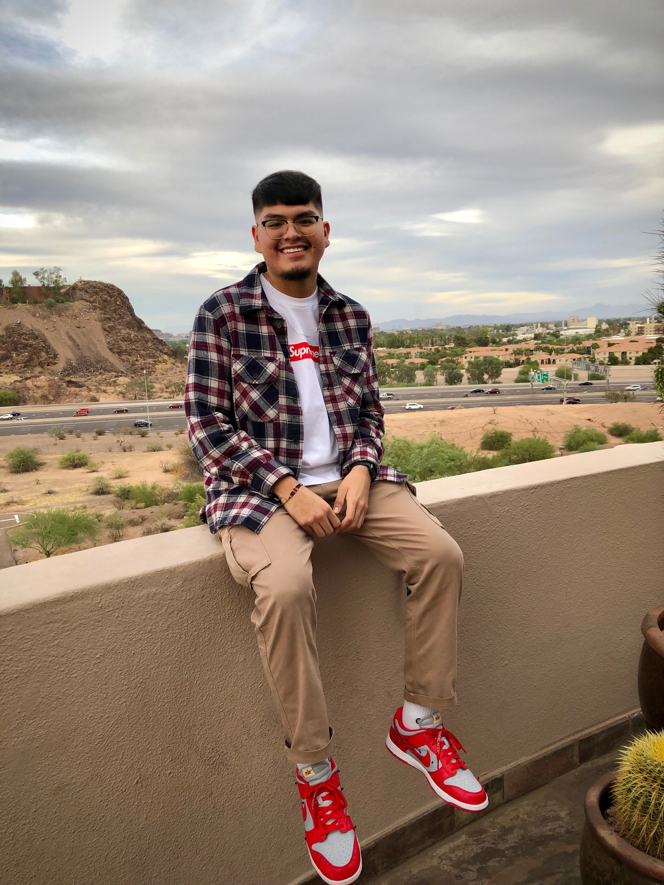

Andrew Thompson

623-255-0023
Address
Email
Objective
My main objective is to finish college and possibly work towards a master degree in software development. I would eventually
like to land a job within Intel or IBM. I really wound not mind getting an intership to start, as long as I get to learn everything
and anything I need to know about software development. I'm eager to learn and make connections along the way all while being a
consistently hard worker.
Education
- High School Diploma- Alhambra High School (4.1 gpa)
- Associates of Applied Science- Phoenix College (3.7 gpa transferred)
- Bachelor of Science- Digital Culture (Media Processing) at Arizona State University (3.77 gpa)
Experience
- I worked at Fry's Marketplace as a courtesy clerk from December 2017-March 2018
- I worked as a Cashier at the Phoenix Converntion Center from October 2018-July 2019
- I worked as a Cashier at Best Buy from October 2019-January 2020
- I currently work as a Cook at Dog Haus since May 2020
- I worked on a group project in AME 111 that helped people interact wihin Covid19 restrictions in mind. We used graphic design and Java concepts when presenting our project
- I took AME 130, 230, and 294 courses and did projects ranging from interaction with Maximus P, p5.js, and Arduino and finished all with A's
References
- High School Physics Teacher- Mr.Mott at Alhambra High School
- Paige Medina- Manager at Best Buy in Phx, Az
- Mondo Mahmound- Owner of Dog Haus 1 E. Washington St. Phx, Az